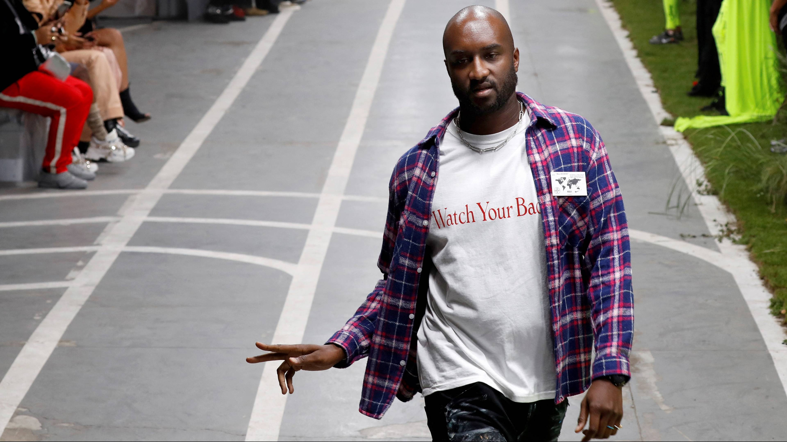

Academische reis
Na zijn middelbare school studeerde Abloh architectuur aan de Universiteit van Wisconsin-Madison, waar hij werd blootgesteld aan de principes van ontwerp, structuur en esthetiek. Zijn academische reis vervolgde hij aan het Illinois Institute of Technology, waar hij een masterdiploma behaalde in architectuur en stedenbouw.

Streetwear met luxe
Virgil Abloh stond bekend om het gebruik van opvallende graphics en een gedurfde combinatie van streetwear met luxe. Hij had een achtergrond in techniek en architectuur, wat zijn ontwerpaanpak beïnvloedde en hem onderscheidde van anderen in de mode-industrie.
Buiten de mode had Abloh interesse in diverse kunstvormen en disciplines, zoals muziek en architectuur.
Hij was een creatief genie dat grenzen doorbrak en tradities uitdaagde. Zijn overlijden in 2021 was een groot verlies voor de wereld van kunst en mode, maar zijn creatieve nalatenschap blijft voortleven en inspireren.